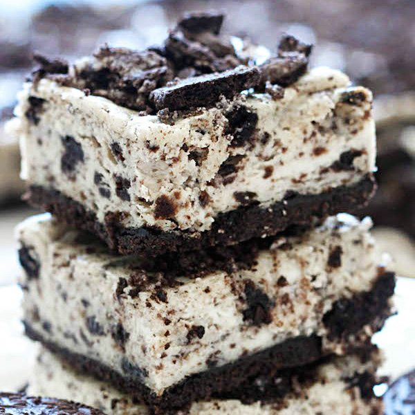

Oreo Cheesecake

Ingredients
- Oreos: This recipe starts with a package of Oreos.
- Butter: Half a stick of salted butter lends richness and flavor.
- Cream cheese: Of course, you'll need softened cream cheese for these cream cheese bars.
- Sugar: A cup of white sugar lends the perfect amount of sweetness.
- Sour cream: Sour cream adds creaminess and subtle tangy flavor.
- Eggs: Three eggs give the bars richness and help bind the batter together.
- Vanilla: Vanilla extract enhances the overall flavor.
- Salt: A pinch of salt also enhances the flavor, but it won't make the bars taste salty.
- Pulse the cookies in a food processor. Pulse again with butter.
- Press the mixture into a prepared pan and bake until set.
- Make the filling, pour the batter onto the crust, and sprinkle with cookie crumbs.
- Bake until the filling is set, cool, and chill.
- Cut the Oreo cheesecake bars into squares.